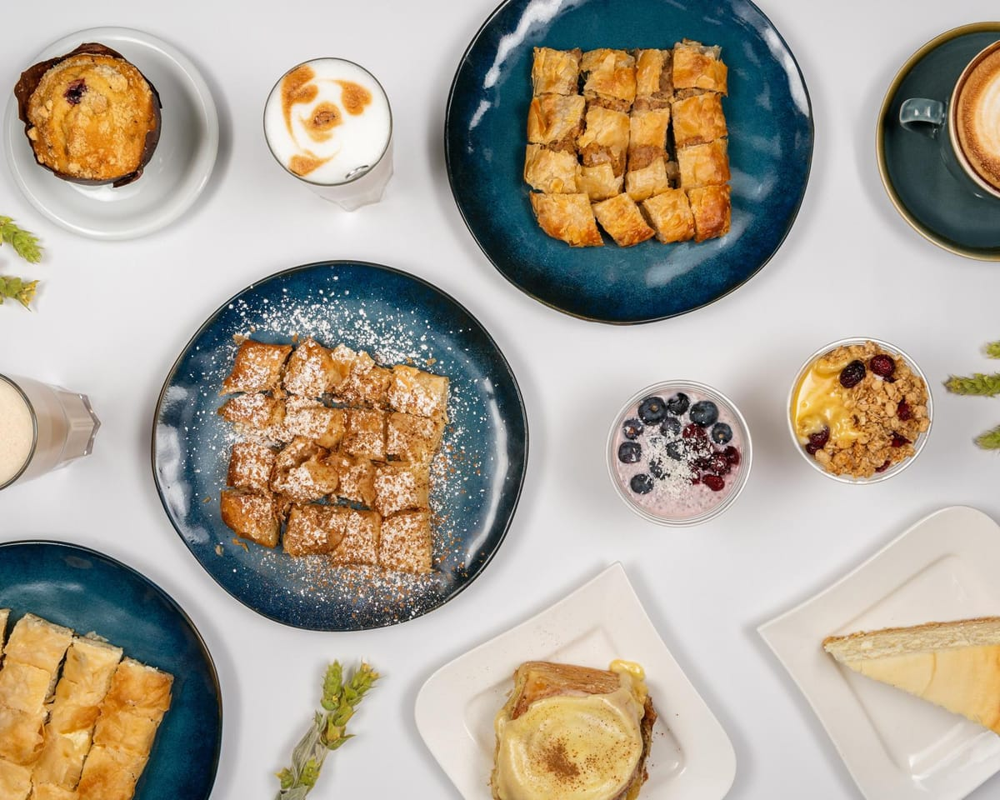

Bougatsa, dreierlei
Feta, Hackfleisch oder Vanillecreme, in Filoteig gewickelt und im Blech gebacken. Feta und Vanille bestellen unsere Gäste am häufigsten.
Die Öfen gehen an, bevor die Straße wach wird. Der Filoteig wird für die Bougatsa geschichtet, die Sesamringe kommen hinein, die Croissants gehen auf und werden gebacken — damit die ersten auf der Theke liegen, wenn wir aufschließen.
Wir halten die Karte bewusst klein — rund fünfzig Dinge, die meisten davon am selben Tag gemacht oder fertiggestellt. Bagels und Brioche-Sandwiches werden frisch belegt und getoastet; deshalb dauern sie ein paar Minuten länger als ein Gebäck vom Blech. Es lohnt sich.
Am späten Nachmittag ist das meiste Gebäck weg. Genau so soll es sein: lieber ausverkauft als von gestern.

Feta, Hackfleisch oder Vanillecreme, in Filoteig gewickelt und im Blech gebacken. Feta und Vanille bestellen unsere Gäste am häufigsten.
Ekmek Kadayifi, Kataifi, Karidopita, Trigonaki, Cheesecake und ein Lotus-Cheesecake — die griechischen Klassiker neben ein paar Berliner Kuchen.
Freddo Espresso und Freddo Cappuccino, kalt aufgeschäumt mit richtigem Schaum, dazu der klassische Frappé, den es nicht überall gibt.
Lachs und Ei auf getoastetem Brioche, Speck und Avocado, griechischer Joghurt mit Honig und Granola oder ein zuckerarmes Bananenbrot.
Die meisten Bagels, Pitas und Gebäcke sind fleischfrei — mediterran mit Feta, Mozzarella-Pesto, Spinat-Feta-Pita, Gourmet mit Oliven.
Lieferung über Wolt und Uber Eats im Umkreis von rund 3 km, oder vorbestellen und im Vorbeigehen abholen.
Ein kleiner Familienbetrieb, sechs Tage die Woche geöffnet.
Lychener Straße 63, 10437 Berlin. Montags Ruhetag.